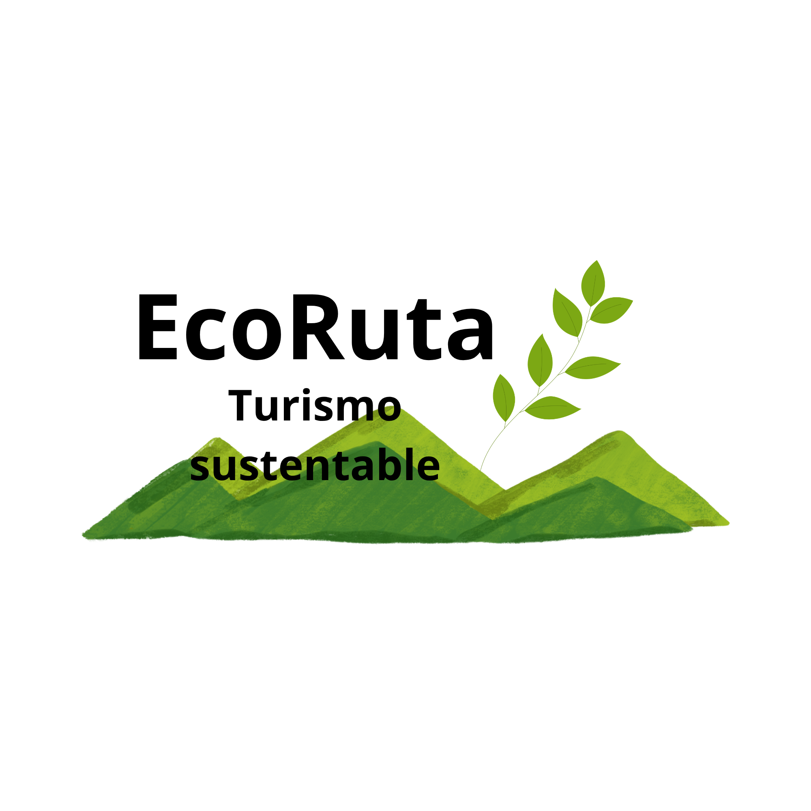

Ven con nosotros a recorrer este hermoso sendero, donde conoceras diversos tipos de arboles como el canelo, peumo, linge, además de fauna como el picaflor. Esta ruta cuenta con miradores accesibles y pasarelas de madera en el corazón de Temuco.